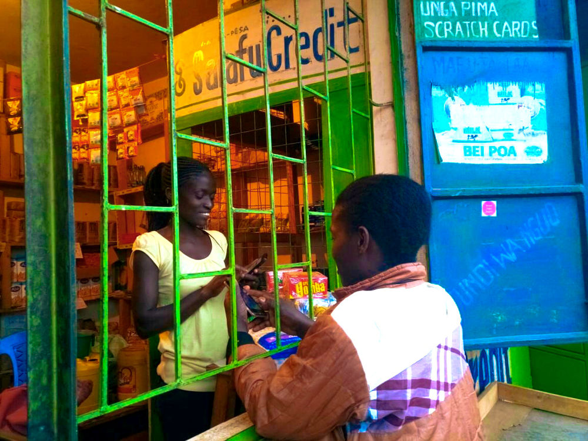
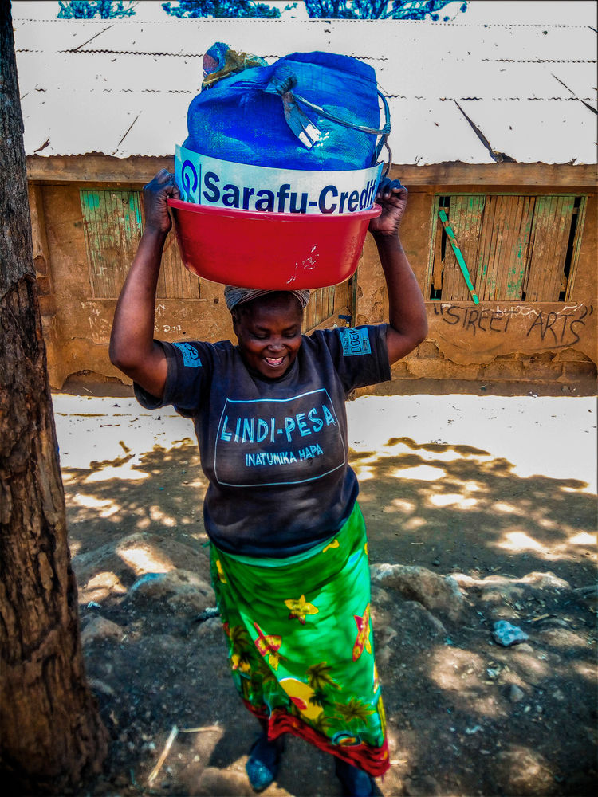

Disrupting Currencies
Grassroots Economics Foundation has been at the forefront of empowering bottom-of-the-pyramid communities in Kenya by use of Sarafu Network; a network of Community Currencies, (CCs), operating in Nairobi and Mombasa respectively.
It started with 75 businesses in Kongowea (Mombasa) launching Eco Pesa as the first local currency in 2010, then Bangla-Pesa in Mikindani-Mombasa-Kenya, which the locals embraced. To-date, community members have been using it as a Community Currency to pay for goods and services enriching their daily lives.

Will Rúddick the pioneer of community currencies in Kenya, listening at a strategic planning session.
This project, which started with an aim to reduce economic instability in marginalize communities has seen people and businesses increase local trade by providing a complementary means of payment where the national currency is scarce. This reduces debts as CCs become a spending currency while the Kenyan shilling, becomes a tool for saving. In Nairobi, more than 1000 small businesses take an active role in their own economic development in this way. This has led to a 17% increase in local jobs creation and 37% growth in sales revenue through the frequent transactions that happen in these ` Sarafu-Credit locales. <http://www.grassrootseconomics.org/community-currencies>`_.

The good news about this is that Sarafu-Credit users in these communities, no longer depend on their income or wages as the only way to cater for their daily needs. They can now depend on each other and use local currencies to buy food like fruits, vegetables, snacks and access services like tailoring, hairdressing and getting rid of waste materials dumped within the community.
Community Currencies in the Sarafu Network like Gatina Pesa in Kawangware connect underutilized work forces with unused resources to create local industries that guarantee the provision of basic needs.
So, how do people in the Network use Sarafu-Credit?
Sarafu-Credit users in Gatina, Kawangware
Sarafu-Credit users get to access goods and services from sellers who accept the CCs, creating a network of traders who unite the different areas and hence uplifting the economy of that community.
Besides, traders using Sarafu-Credit as an alternative economic system and supplementing the inadequate national currency, they are also achieving SDGs goals themselves in vulnerable communities. For example, Sarafu has a direct impact on; food security, decent work, sustainable communities and economic growth.
Design and cultural symbolism of community currency.
Sarafu-Credit is created using cryptocurrencies and also is printed on high-quality paper with designs and symbolic representations depicting the cultural values of the community. This leaves no room for counterfeiting. Participants involved accept and agree on this form of exchange, creating a connected and liquid market for all the Community Currencies in these regions.
What to note is, the implementation of CCs system in Kenya, is an innovative way of improve living standards, as it also protects and advances Sustainable Development Goals (SDGs).
SDG’s can be tied to community currencies, whereby for instance, farmers could be linked directly with urban consumers by using a local currency, enhancing food security.

The Chief Operating Officer of Grassroots Economics, Emanuel Dominic delivering a presentation on community currencies.
Community events like the one in the photo below in Nairobi and Mombasa target community members who are new to the concept of community currencies and the longtime users who will be recognized for their knowledge/progress as Sarafu-Credit users and ability to take charge of their lives.
A Sarafu-Credit user from Lindi, Kibera.
This is an open day dedicated to community sharing, networking, educating and training on how the CCs work, as well as coming together to implement new ways that their own Community Currency will improve their communities.
For future updates; Subscribe to our newsletter (link to newsletter) and like our social media platforms.
Use the hashtag #sarafucredit #lindipesa #complementarycommunitycurrency #Economics4Change to join the conversation.
#sarafucredit #lindipesa #Economics4change #complementarycommunitycurrency #SarafuCredit